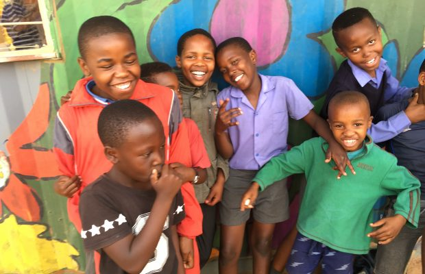
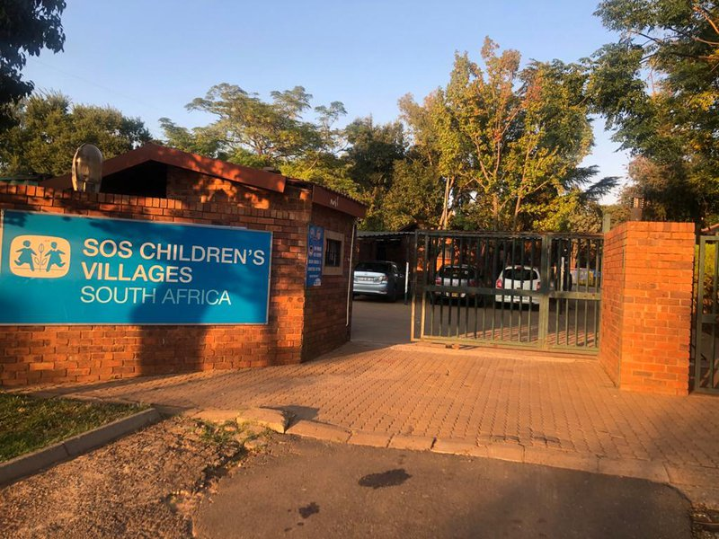
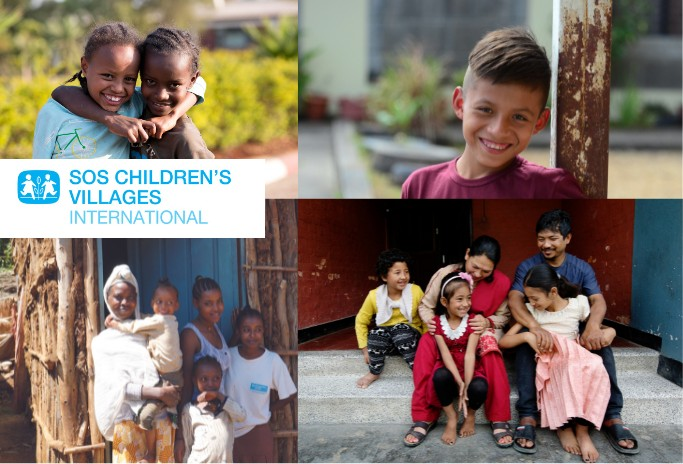

Family Strengthening
Counseling and support: Providing emotional and psychological support to families facing challenges.
Skills development: Offering training and education to help families improve their parenting skills and other necessary skills.
Kinship care: Supporting families to live with their extended family members, which can be a protective measure.
Nutritional assistance: Ensuring families have access to the necessary food to maintain their health and well-being.
Healthcare access: Helping families secure access to healthcare services to keep children and families healthy.
Community support: Working with community-based organizations and local authorities to build resilience in vulnerable families.

These programs are designed to empower parents and families to overcome their challenges and help keep them together, ultimately benefiting the children and communities they serve.
Alternative care
Quality shelter:Ensuring children have a safe and secure living environment.
Alternative parental care:Providing care and support to children who have lost their biological parents.
Education:Offering educational opportunities to help children develop skills and knowledge.
Health care:Ensuring children receive medical attention and health support.
Life skills training:Teaching children essential life skills to empower them to navigate challenges.
Social support:Developing strong social support systems for children and families to foster positive relationships and community integration.

Youth development
A mother:Each child has a caring parent who provides emotional support and guidance
Brothers and sisters:The natural family ties grow as children are cared for in a supportive environment.
A house:A secure place to grow up in, providing stability and a sense of belonging.
A village:The SOS family is part of the community, fostering social connections and support
